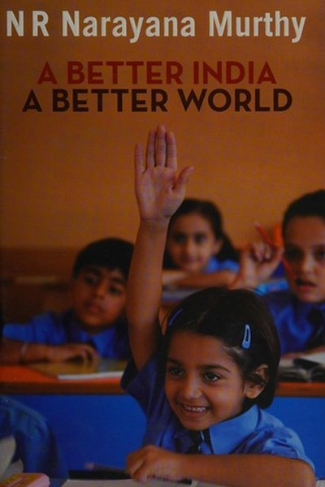

Library › Business & Startups
A Better India, A Better World — Summary & Key Lessons

The Infosys founder's blueprint for values, merit and national progress.
📖 OPEN THE FULL INTERACTIVE BREAKDOWN →🌐 Read it in Hindi, Hinglish, Gujarati, Tamil & 22 more languages — free, with audio.
💡 The Big Idea
India's problems are not primarily economic — they are problems of values and execution. Murthy argues that the same principles that built Infosys — meritocracy, transparency, accountability, hard work and compassion — can build the nation. The book is a founder's manual for both business and citizenship: wealth is created by disciplined, ethical work, and the duty of the successful is to expand opportunity for others.
🧠 The 7 Key Lessons
Lesson 1: Compassionate Capitalism
Values First
Murthy's central phrase: compassionate capitalism — wealth creation with a human face. He rejects both the greed of pure capitalism and the dependency of pure socialism. The lesson: profit is not evil, and compassion is not weakness — the mature position is creating wealth responsibly and sharing it deliberately. The best businesses and the best societies are both built by this balance.
📖 Example: Infosys created thousands of millionaires through employee stock options while also building one of India's largest corporate foundations — both, not either. Read the full example →
⚡ Do this: Review how you create value and how you share it. Is there one way you could create wealth this year that also creates opportunity for others?
Lesson 2: Meritocracy Is the Great Equalizer
Merit and Opportunity
At Infosys, Murthy insisted that rewards follow performance, not connections, seniority or family name. This meritocracy attracted talent from all over India — a revolutionary idea in a society built on hierarchy. The lesson: the fastest route to both fairness and excellence is judging by output. Systems that reward merit outperform systems that reward loyalty, charm or birth — in teams, companies and countries.
📖 Example: A first-generation graduate from a small town could rise to Infosys leadership purely on capability — the company's greatest advertisement. Read the full example →
⚡ Do this: Audit one system you influence (hiring, rewards, grading). Where does non-merit creep in? Remove one such bias this quarter.
Lesson 3: Transparency Builds Trust, and Trust Builds Value
Transparency
Infosys became famous for conservative, honest accounting — even when it cost short-term profits. That reputation became a moat: investors, clients and employees trusted the company with their money and careers. The lesson: honesty is not a constraint on business; it is the cheapest risk-management system ever invented. A reputation for truth compounds like interest — slowly, then massively.
📖 Example: Infosys's decision to publish conservative numbers and avoid aggressive recognition earned it a premium valuation and client loyalty that no marketing could buy. Read the full example →
⚡ Do this: Identify one place where you shade the truth — reporting, marketing, commitments. Correct it once and observe what it does to trust levels.
Lesson 4: Hard Work Is the Only Real Advantage
The Work Ethic
Murthy's famous schedule — arriving before everyone, leaving after everyone — was not martyrdom; it was strategy. In a competitive world, the people who outwork others systematically win. The lesson: talent is common; sustained, disciplined effort is rare. The Indian IT miracle was built on young people willing to study, work and prove themselves harder than anyone expected. Complacency is the only guaranteed loss.
📖 Example: Infosys's campus culture of continuous learning and long hours in its early years turned ordinary engineers into world-class consultants. Read the full example →
⚡ Do this: Choose one area where you currently coast. Commit to being the hardest-working person in that room for 90 days and track the difference.
Lesson 5: Infrastructure Is a Moral Issue
National Development
Murthy argues that poor roads, power and ports are not just inconveniences — they are injustices that silently tax the poor and block the talented. The lesson: systems are the forgotten infrastructure of fairness. The same applies at every level: a bad process, a broken tool, an unclear policy taxes the weakest the hardest. Fixing infrastructure is the highest-leverage kindness.
📖 Example: A farmer's produce rotting at a bad road while a city executive loses power costs both — but the farmer has no buffer, so the cost is existential. Read the full example →
⚡ Do this: Find one 'infrastructure' gap in your team or home — a process, tool or system that quietly taxes everyone. Fix it this month.
Lesson 6: Education Is the Base of the Pyramid
Education and Skills
For Murthy, education is the single highest-return investment a nation or family can make — it converts potential into capability. His concern: schools that produce certificates, not competence. The lesson: the goal of learning is not credentials but capability. In your own life, the question is not 'what have I been taught?' but 'what can I actually do?' Invest in skills that produce visible output.
📖 Example: India's IT boom was powered by a thin layer of excellent engineering education — Murthy warns the layer is too thin and too shallow. Read the full example →
⚡ Do this: Assess your own capability: what can you produce that you couldn't a year ago? If the answer is vague, pick one skill and make it concrete.
Lesson 7: The Successful Have a Duty to Build
Citizenship
Murthy's closing call: those who benefited from society must reinvest in it — not as charity but as duty. The lesson: success is a loan from the system, not a trophy you fully own. The leaders who build institutions, schools and opportunities for others create the conditions for the next generation — and for their own legacy. Build things that outlive you.
📖 Example: From Infosys Foundation's rural schools to his own work mentoring entrepreneurs, Murthy's post-Infosys life is the book's argument in action. Read the full example →
⚡ Do this: Define one institution you could help build or strengthen this year — a school, a community group, a scholarship, a team — beyond your own benefit.
✅ 5-Step Action Plan
- Write one way to create wealth that also creates opportunity for others.
- Remove one non-merit bias from a system you influence.
- Correct one place where you shade the truth and observe the trust effect.
- Be the hardest worker in one room for 90 days.
- Pick one institution to strengthen beyond your own benefit.
⚠️ When This Doesn't Work
Murthy's 'values, merit and hard work build nations' is the noblest Indian business book ever — and GoFirst is the warning that values don't pay the fuel bill: the airline was run by respected, hard-working, values-driven promoters — and it still collapsed under debt when the environment turned, because airlines are a capital game where character alone doesn't cover the lease payments. Murthy's own career proves his thesis — Infosys built values AND a business model. The caveat: the values are necessary; the model is also necessary. A better India needs both Murthy's ethics and his discipline with the fundamentals — one without the other is a beautiful speech.
💀 The Graveyard Proves It
✈️ GoFirst — The Wadia Airline That Ran Out of Sky. Burn: ₹11,000 crore dues; airline grounded, 55 planes idle. Read the full case study →
💬 Best Quotes from A Better India, A Better World
- “If you want to change the world, first change yourself.”
- “The only thing worse than being blind is having sight but no vision.”
- “Wealth creation is a noble pursuit; it is the foundation of a better society.”
Interactive version: mark lessons as read, listen in your language, share quote cards.